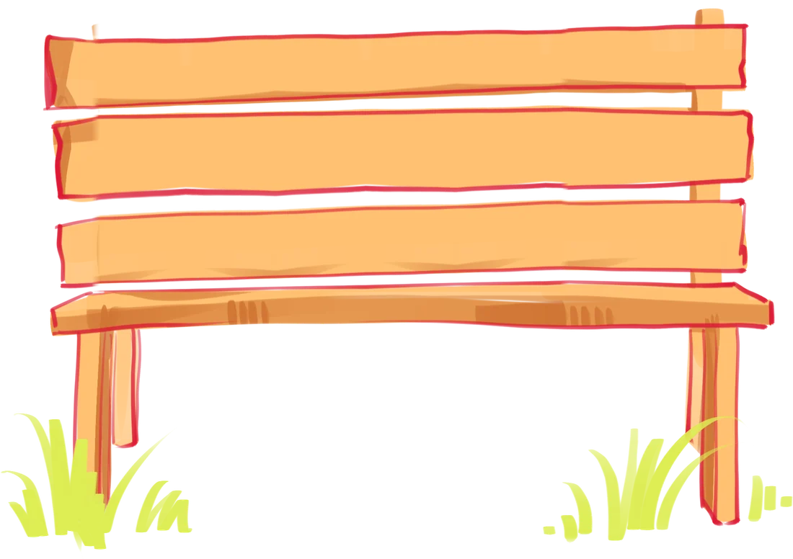
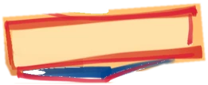
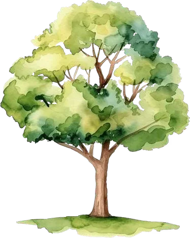
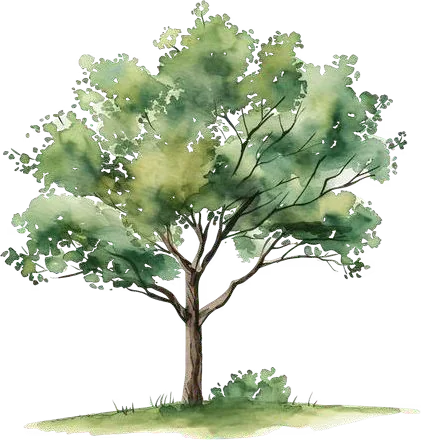

Save me
a seat.
There's always room for one more.
seat here for you.


Never have I ever…
Take a sip if you have. Then reset for the next one.
Hi, we're aha.
Psychologists, coaches and a tech team who make it easier to feel okay, and easier to reach out when you're not.
In your pocket on the aha app: check in, journal and notice your patterns.
Our psychologists step in when you need more than a chat.
In-person therapy sessions, plus workshops like this one, built to be played, not lectured.
Our hope: that reaching out feels as normal as saying hi.
What do belongingness and connection mean for us?
Take 30 seconds. Pick any one of these, or answer your own way.
Find your
match. Fast.
A new prompt every round. Find someone who matches, and stand together.
Mingle. Prompts change every round.
What we all share.
Look around. We have more in common than it seems.
From words to play
Easy to describe.
Harder to notice in the moment.
Let's see where or how they show up.
The Great
Group Challenge.
Make teams of 5–6. You have 7 minutes.
Plan the ultimate campus fest.
Pitch a festival students would actually turn up for.
What's it called?
What happens there?
Why would people come?
Plot twist.
1–2 people from each team now move to a different table.
Keep working. Follow the instructions you've been given.
Freeze frame. What just happened?
No right answers. Share one word, or pass.
What was it like joining a group mid-flow?
What did you notice? What did you assume?
What helped, or blocked, participation?
Same team.
One new rule.
You've got 2 minutes:
Then finish and pitch.
What changed when we made room?
Think beyond whether the task got finished.
“Figure out how we work.”
“Help us shape what we become.”
Which exact action made the difference?
Outside this room, there are no cards.
But there are still unwritten rules.
Everyone has a shared history.
Everyone seems to know what to do.
Everyone already has a role.
Everyone seems to be in on it.
Sometimes nobody means to exclude anyone, and someone still feels outside.


A campus can be full of people…
…and someone can still feel alone.
Being around people isn't the same as feeling connected.
Fitting in is not the same as belonging.
“What must I change to be accepted?”
“Can I be myself and still take part?”
Belonging is something we receive, and something we create for others.
5 tiny ways to save a seat.
You don't have to become everyone's best friend.
You notice someone standing alone.
You've seen them in class, but you've never spoken.
What could you say that feels natural, not forced?
Turn to one person · try a one-line invite
Think of a time you felt left out.
Just for you. Nobody will ask you to share it.
Write 2–3 small things you could do in the places you feel left out.
Build the Wall of Seats.
Two sticky notes. Two ways to make belonging real.
I feel like I belong when people
I can help someone belong by
Add them to our wall, or keep yours private. No names needed.
In the next
make one small moment easier for someone else.
You can connect with us.
Today may end here. The conversation doesn't have to.
Questions, ideas, or just want to talk? We'd be glad to hear from you.
If today brought something up, we are here for you.
 scan me
scan meSometimes belonging isn't about finding the right room.
It's about someone noticing you at the door… and saving you a seat.
Feedback
How did today feel?